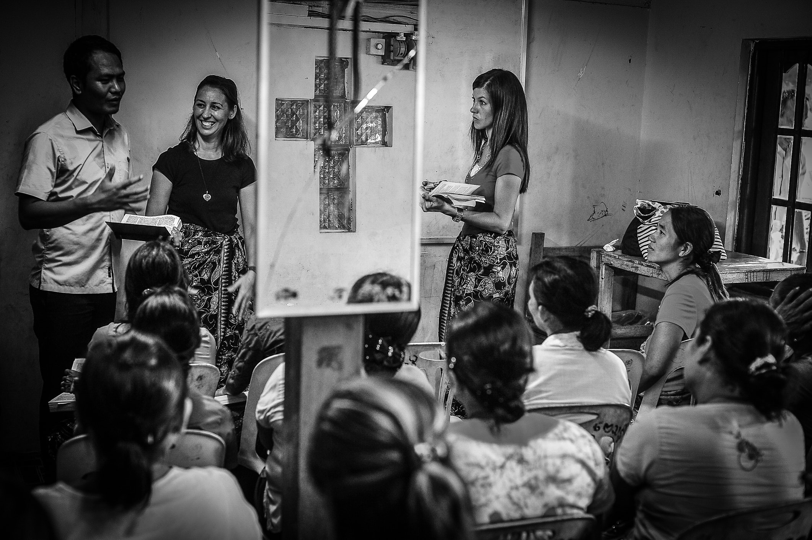
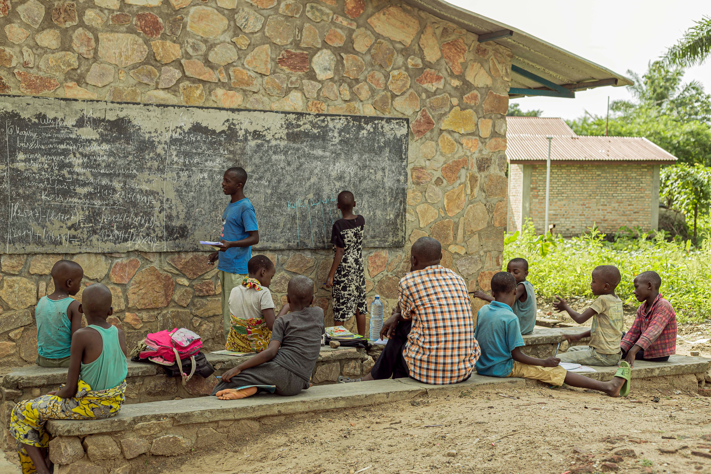
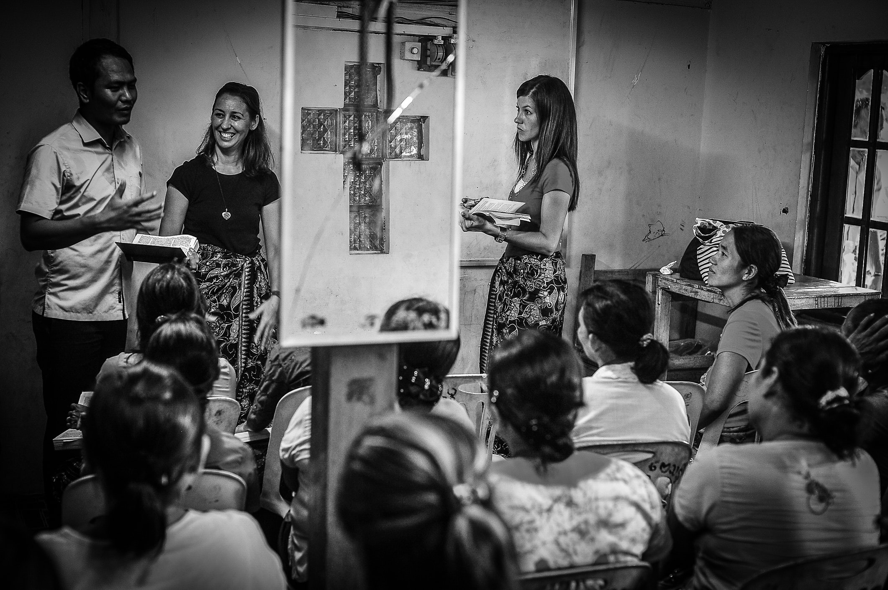
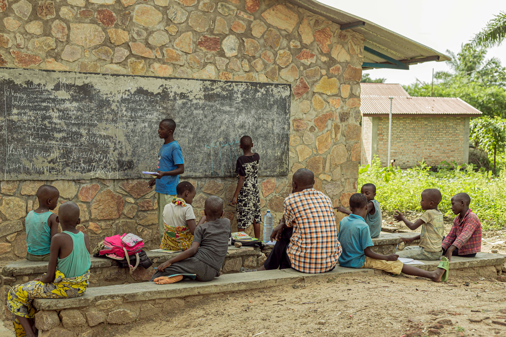

O Projeto Reforço nas Ruas, traça metas de proporcionar um ensino simples e eficaz de maneira prática. Por não ser a substituição da escola, os alunos terão a oportunidade de reforçar o ensino sem a necessidade de se locomoverem à uma determinada instituição, pois o intuito do projeto se baseia na criação de salas de aulas improvisadas na própria comunidade.
Com o apoio de voluntários e empresas companheiras, o projeto atuará em comunidades carentes, sem tempo determinado. Os materiais necessários são arrecadados através de doações. Para se voluntariar como professor, basta ter ensino médio completo ou pelo menos estar cursando o último ano escolar. As escolhas são feitas por meio das fichas cadastrais preenchidas por todos aqueles que pretendem participar do projeto, não necessariamente como docente.
As turmas serão separadas por ruas, para facilitar a distribuição das aulas e o andamento dos conteúdos, os quais semanalmente são divulgados no cronograma no site, atuamos na terça, quinta e aos sábados. As aulas possuem duração de 3 horas. Planejadamente os voluntários se deslocam coletivamente até o local onde será realizado o projeto e preparam o ambiente.
O reforço só acaba quando a ajuda reforçada não se fazer tão necessária, pois a procura de resultados é sempre importante para o andamento de um projeto. Por meio de ideias educacionais e sustentáveis, o Reforço nas Ruas procura diminuir a desigualdade educacional que vem crescendo estatisticamente ao decorrer do tempo.
Assim como Mandela, acreditamos que a educação é a arma mais poderosa que se pode usar para mudar o mundo.
 



Junte-se a nós nesta palestra inspiradora e estimulante que iluminará sua mente sobre a importância do conhecimento em nossa vida diária. Em um mundo em constante evolução, onde a informação flui livremente, é essencial compreender como o conhecimento pode nos capacitar, transformar nossas perspectivas e moldar nosso futuro.
Nesta palestra inspiradora, descubra como cuidar do seu ambiente de estudo pode afetar significativamente seus resultados acadêmicos. Aprenda estratégias práticas para criar um espaço propício ao aprendizado, otimizar a concentração e aumentar a produtividade. Explore a importância de um local organizado e livre de distrações
Nesta palestra transformadora, explore a importância de cultivar o hábito de estudar para alcançar o sucesso acadêmico. Descubra estratégias eficazes para desenvolver uma rotina de estudo consistente, superar a procrastinação e manter a motivação ao longo do tempo. Aprenda técnicas de gerenciamento de tempo e organização.